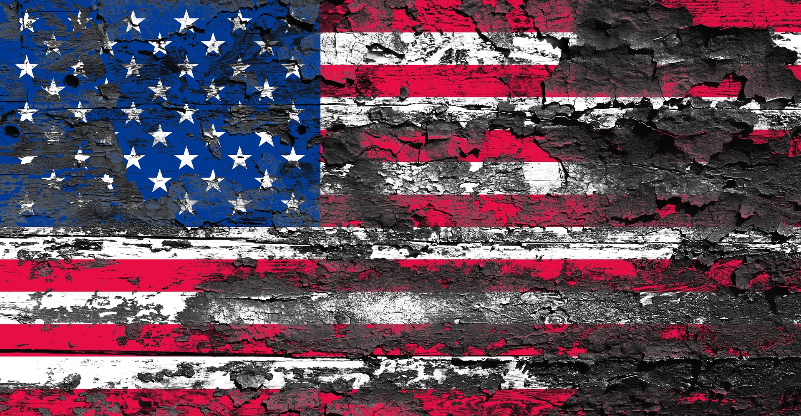

US Election 2020 Data Snapshots
Regular data updates as the drama unfolds
"History says, don't hope
On this side of the grave.
But then, once in a lifetime
The longed-for tidal wave
Of justice can rise up,
And hope and history rhyme."
- Seamus Heaney (quoted by Joe)
Joe Biden's most recent Tweets
Tweets by JoeBiden#Biden2020 wordcloud
Top words in tweets using #Biden2020

Last updated: 09:30 Nov 9 | Graphic: Miguel Roca 2020
#Biden2020 most liked tweet
trump bragging he won more votes than anyone is like me saying I won more games than anyone except my opponent who won more.
— Martina Navratilova (@Martina) November 8, 2020
You lost, @realDonaldTrump - get over it!!!#Biden2020
Last updated: 09:30 (GMT) Nov 9 | Data processing: Miguel Roca 2020
#Biden2020 Tweet frequency
#Biden2020 tweets over a recent time period

Last updated: 09:30 Nov 9 | Graphic: Miguel Roca 2020
"Joe Biden is a corrupt politician who is bought and paid for by China! In 2016, Georgia voted to FIRE this corrupt political establishment and you elected an outsider as President who is finally putting AMERICA FIRST!"
- Donald J. Trump
Donald Trump's most recent tweets
Tweets by realDonaldTrump#Trump2020 wordcloud
Top words in tweets using #Trump2020

Last updated: 09:30 Nov 9 | Graphic: Miguel Roca 2020
#Trump2020 most liked tweet
A National Trump Rally is Brewing!#LegalVotesOnly #Trump2020
— Trump Silent Majority! 🇺🇸 🏁 (@realTrumpForce) November 8, 2020
Last updated: 09:30 (GMT) Nov 6 | Data processing: Miguel Roca 2020
#Trump2020 Tweet frequency
#Trump2020 tweets over a recent time period

Last updated: 09:30 Nov 9 | Graphic: Miguel Roca 2020